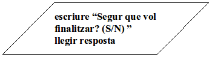

Entrada/Sortida¶
En una primera aproximació, les instruccions d’entrada recullen un valor des d’un dispositiu d’entrada (ex. teclat) i l’assignen a una variable.
Per la seva banda, les instruccions de sortida dipositen el resultat d’una expressió a un dispositiu de sortida (ex. pantalla).
Quan llencem un programa per ser executat, el sistema operatiu li obre automàticament tres canals (o fitxers) anomenats entrada estàndard, sortida estàndard i sortida estàndard d’error. A menys que es faci res especial, el fitxer d’entrada queda connectat al teclat, mentre que els dos canals de sortida queden connectats a la pantalla.

De moment no en farem gaire cas de la sortida estàndard d’error.
Alguns exemples en pseudocodi:
1 2 3 4 5 6 | llegir text ** llegeix un string
llegir resposta ** llegeix la resposta a una pregunta
llegir de f nouValor ** llegeix del fitxer f un nou valor
escriure "Hello World!" ** escriu una salutació
escriure "Segur que vol finalitzar? (S/N) "
escriure a f resultat ** escriu al fitxer f el valor resultant
|
La lectura també es pot representar així:
1 2 3 | text = llegir ** llegeix un string
resposta = llegir ** llegeix la resposta a una pregunta
nouValor = llegir de f ** llegeix del fitxer f un nou valor
|
Quan no s’indica l’origen o la destinació, es pressuposa que és l’entrada o la sortida estàndard. Altrament, s’està indicant un fitxer.
Exemples en diagrames de flux¶
Amb l’entrada i sortida, els fluxos de programa esdevenen una mica més interessants. Les instruccions d’entrada/sortida es representen mitjançant un paral·lelogram en comptes d’un rectangle.
Com es farà en Python?¶
En Python l’entrada i sortida es realitza d’una manera molt similar al pseudocodi.
Per llegir de l’entrada estàndard farem:
text = input()
input() és el que s’anomena una funció. Ja n’hem vist algunes, per
exemple Conversions entre tipus de dades, i en veurem moltes més a mida que
avancem en la programació.
És interessant saber que si entre els parèntesis hi afegim algun missatge, aquest s’escriurà abans de demanar l’usuari l’entrada. Per exemple:
nom = input("Quin és el seu nom? ")
Per escriure, simplement farem:
1 2 3 4 | print("Hello world!")
print("Tinc", anys, "anys")
print("Tindré", anys+1, "anys")
print("La meva %s és %s anys" % ("edat", anys))
|